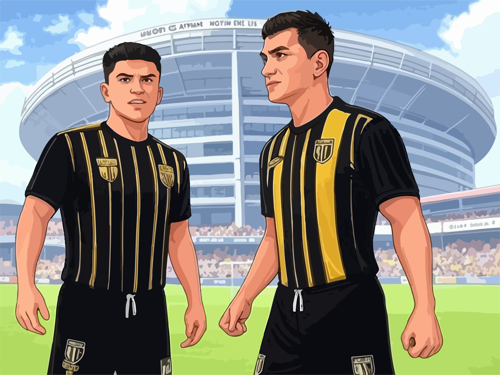
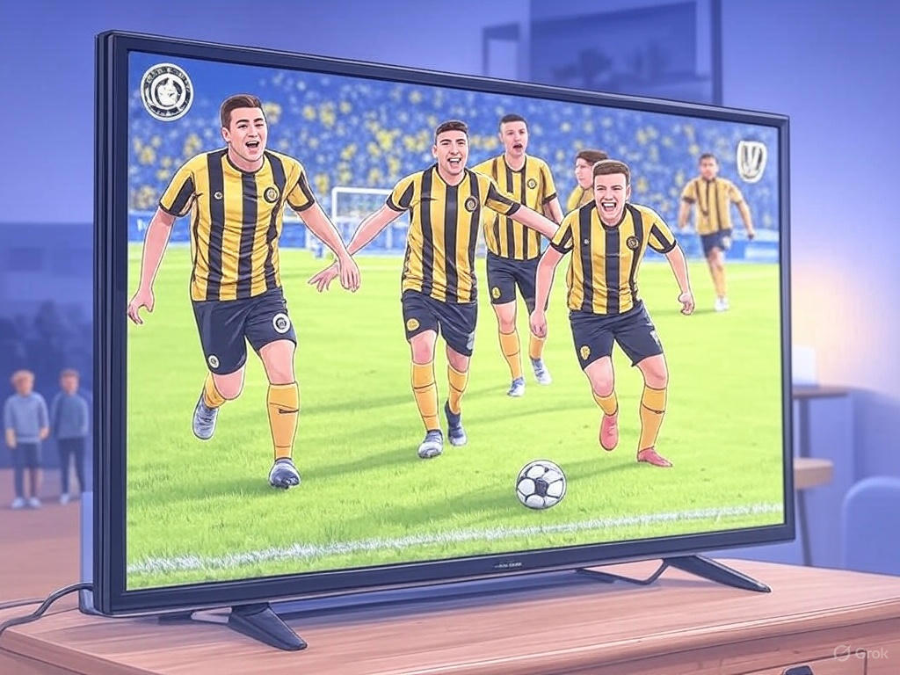
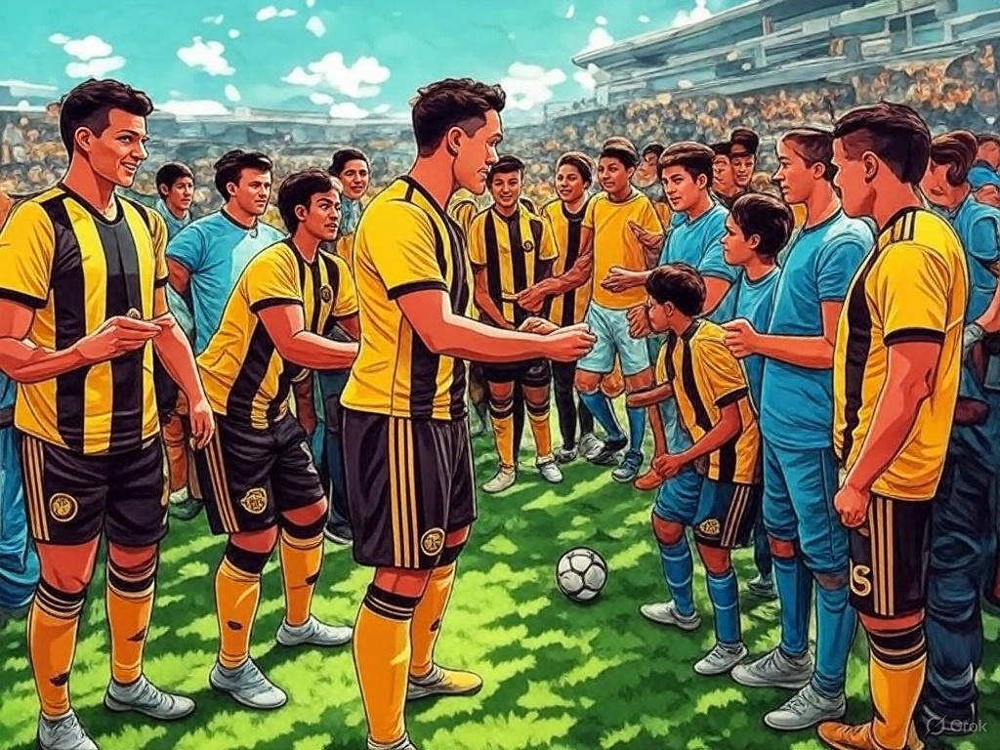

Noticias
Gran victoria de Güechas F.C.
Güechas F.C.logró una impresionante victoria en su último partido, demostrando su
habilidad
y determinación en el campo. Desde el inicio del encuentro, los jugadores mostraron una gran
cohesión y
estrategia, dominando la posesión del balón y creando numerosas oportunidades de gol.
El primer gol llegó en el minuto 23, cuando el delantero Fernando Castillo realizó un potente
disparo
desde fuera del área, dejando al portero rival sin opciones. La defensa del equipo se mantuvo
sólida,
con Carlos Ramírez y Luis Gómez interceptando cada intento de ataque del equipo contrario.
En la segunda mitad, el centrocampista Javier Hernández amplió la ventaja con un gol de cabeza tras
un
preciso centro de Miguel Sánchez. La celebración en la cancha fue eufórica, con los jugadores
abrazándose y compartiendo la alegría de la victoria.
El entrenador Ricardo Fernández expresó su satisfacción con el rendimiento del equipo, destacando la
disciplina y el esfuerzo de cada jugador. Esta victoria no solo refuerza la posición de "Güechas
F.C."
en la liga, sino que también fortalece el espíritu y la moral del equipo para los próximos desafíos.
Bienvenida a Juan Pérez, el nuevo delantero estrella de Güechas F.C.
Güechas F.C. se complace en anunciar la incorporación de Juan Pérez, el talentoso delantero que
promete
llevar al equipo a nuevas alturas. Con una trayectoria impresionante y habilidades excepcionales,
Juan
se une a nuestro equipo con la firme convicción de contribuir significativamente en la próxima
temporada.
Juan Pérez, conocido por su velocidad y precisión en el campo, ha demostrado ser un jugador clave en
sus
anteriores equipos. Su capacidad para leer el juego y su instinto goleador lo convierten en una
amenaza
constante para las defensas rivales. Estamos emocionados de ver cómo su presencia fortalecerá
nuestra
ofensiva y añadirá una nueva dimensión a nuestro juego.
El entrenador, Carlos Rodríguez, expresó su entusiasmo por la llegada de Juan: "Estamos muy
contentos de
tener a Juan en nuestro equipo. Su experiencia y talento serán fundamentales para alcanzar nuestros
objetivos esta temporada. Estoy seguro de que los aficionados estarán tan emocionados como nosotros
de
verlo en acción."
Juan Pérez también compartió sus pensamientos sobre unirse a Güechas F.C.: "Es un honor formar parte
de
este equipo. Estoy ansioso por comenzar a entrenar y jugar junto a mis nuevos compañeros. Estoy
comprometido a dar lo mejor de mí y ayudar al equipo a lograr grandes cosas."
La directiva de Güechas F.C. y todos los aficionados le dan la más cálida bienvenida a Juan Pérez.
¡Estamos seguros de que su llegada marcará el comienzo de una era emocionante para nuestro club!
Escucha el segundo capítulo del podcast de Güechas F.C. con la voz de nuestra apasionada hinchada
Güechas F.C. invita a todos sus seguidores a sintonizar el segundo capítulo de nuestro podcast oficial, donde escucharemos las opiniones, historias y emociones de nuestra fiel hinchada. ¡No te lo pierdas y únete a la conversación!
Eventos
¡Únete a Nuestra Pasión por el Futbol!
-

Partido contra C.C. Andino: Güechas F.C. se enfrentará a este equipo en el Estadio Enrique Olaya Herrera. ¡Un encuentro emocionante para los fanáticos
Transmisión en Güechas TV: Revive los mejores momentos de los partidos de Güechas F.C. en su canal oficial
Entrenamiento Abierto de Güechas F.C.": Este fin de semana, el club organizará un entrenamiento especial abierto al público en el Estadio Enrique Olaya Herrera. Los aficionados podrán conocer de cerca al equipo, obtener autógrafos y disfrutar de actividades interactivas. ¡Una oportunidad para compartir la pasión por el fútbol!